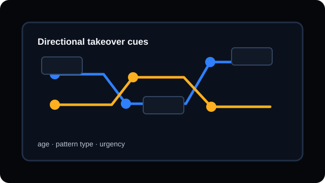
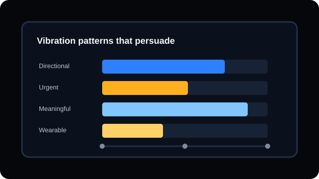
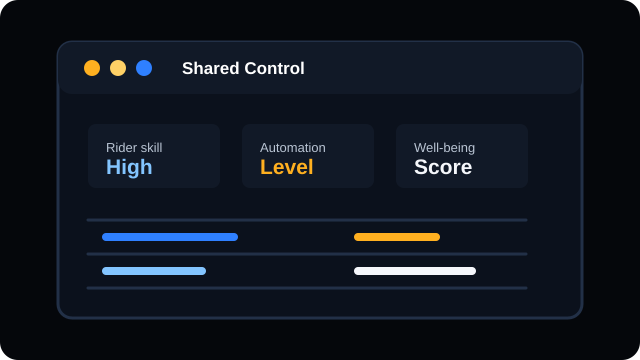

15
Publications
41
Citations
Google Scholar indexed works · Apr. 23, 2026.

Wei-Hsiang Lo
Human Factors Researcher
I am a Human Factors Researcher and Ph.D. student in Industrial and Operations Engineering at the University of Michigan College of Engineering, working with the Intelligence & Human Augmentation Lab (iHub).
My research interests include human-automation interaction, automated driving, mental states, multimodal displays, and human behavior modeling, with a focus on safer transitions between people and intelligent mobility systems.
Google Scholar indexed works · Apr. 23, 2026.
Intelligence & Human Augmentation Lab · University of Michigan
Advisor: Dr. Manhua Wang
University of Michigan, Ann Arbor. Advisor: Dr. Manhua Wang.
San Jose State University, San Jose. Advisor: Dr. Gaojian Huang.
Conducted research on automated driving, vibrotactile displays, human-AI collaboration, and user preference.



Studies how mental states, scenario context, and modality shape informative takeover requests in automated driving.
Evaluates AI roles and user preference in a multi-modal human-AI collaboration framework for e-scooters.
Frames multi-level autonomous mobility through a triadic human-AI collaboration model.
Compares static and dynamic wristband vibration cues for enhanced driver response in automated vehicles.
Examines perceptions of smartwatch haptic feedback for automated vehicle takeover decision support.
Assesses meaningful visual and tactile feedback for hearing and non-hearing drivers in automated vehicle takeover.
Explores multimodal feedback for hearing and non-hearing drivers, recognized with the Auto UI Best Video Award.
Studies how meaningful vibrotactile displays shape user preferences across age groups in automated driving.
Develops a triadic framework for human-AI collaboration beyond traditional driving automation levels.
Technical report on driver engagement, mental states, and safer automated vehicle transitions.
Report on driving behavior across automation levels for future rental and ridesharing contexts.
University of Michigan, College of Engineering · Intelligence & Human Augmentation Lab
Advisor: Dr. Manhua Wang
San Jose State University · Behavior, Accessibility, and Technology Lab
Advisor: Dr. Gaojian Huang
Shih Chien University, Taipei
Design foundation for human-centered mobility and multimodal interface work.
Recognized for poster work on AI-driven e-scooter safety and multi-modal human-machine interfaces.
Awarded for engineering achievement during graduate study.
Recognized for work on multimodal feedback for effective takeover in automated vehicles.